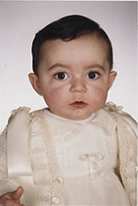

Iker Hoyos Bermejo
Iker Hoyos Bermejo 

This page is within a frameset. View the entire genealogy report of Hoyos Bermejo families, or surname index of Hoyos Bermejo pedigrees or report summary of Hoyos Bermejo heritage from "Árbol Genealógico de Manolo y Amalia".
Genogram Examples.
© 2006 GenoPro Inc. All Rights Reserved.